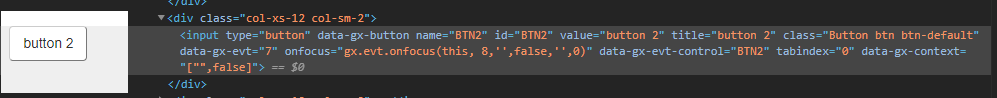

In order to interact and get information from displayed elements on a web page, there are some locators to do so. They are presented below. Control Name selectorThis is a GeneXus locator in the sense of it is HTML-independent. You can write your test without having to worry about dealing with the HTML selectors explained below. You can recognize where this selector can be used because the parameter name is usually called ControlName or TableName and the command does not include HTML locators on its name such as ByID, ByXPath, etc.; you will just see Click(ControlName: character), Type(ControlName: Character, Text: character), etc. In GeneXus, you can not define two elements with the same control name, except when the control is replicated as a grid or table column or there are web components that include controls with the same name. So, there are 4 flavors for this selector:
For example, for the following web panel: If you want to click the &Name variable at the third row in the grid you should write
&driver.Click("&Name", 3)
If the control would be inside a web component named Component1 you should write:
&driver.Click("Component1.&Name", 3)
If you want to click the variable outside the table, the simple control, you should write:
&driver.Click("&Name")
If the control would be inside a web component named MyWebComponent you should write:
&driver.Click("MyWebComponent.&Name")
Note 1: Variables require that the ampersand symbol (&) be included as a part of the control name selector. Note 2: Error viewer controls don't have a control name property. Usually, you want to get their text, for those cases use GetMessages() command. Id selectorThis is the most recommended selector because the id attribute must be unique amongst all elements in a DOM. This attribute is case-sensitive. Use it every time it is available; not all elements have it. For example, for this button we have the following HTML element:  So, for example, to click it write on your test:
&driver.ClickByID("BTN2")
Name selectorThis selector is available for some common elements such as buttons, forms, inputs, selects, and others. For example, for the same button shown in the previous image, to get its text you should write on your test:
&driver.GetValueByName("BTN2")
CSS selectorCSS selector allows different ways of locating an element. For example, using Google Chrome, an easy way to obtain a CSS selector for an element is to inspect the element and right-click over it, then select the option Copy -> Copy Selector. It is very similar when using other browsers. For example, for the following HTML element: <div class="gx-warning-message">Button 2 pressed</div> You can get its text executing the following command:
&driver.GetTextByCSS(".gx-warning-message") // It uses element class
XPath selectorIf the elements are not found by the previous locators like id, CSS, and name, then another option is using an XPath selector. This selector is from XML structure and it is powerful since it allows different search criteria such as by text, class name, tag name, attribute, etc. For example, if you want to get the text of this element: <div class="gx-warning-message">Button 2 pressed</div> You can write the command:
LinkText selectorThis selector can be used with link elements only. For example, for the following link: You can add the command:
&driver.ClickByLinkText("gxtest doc")
|
| Backlinks | |
| Changelog GXtest | GXtest UI Commands - Selectors (GeneXus 17 upgrade 0 and 1) |
| Toc:GXtest v4 |